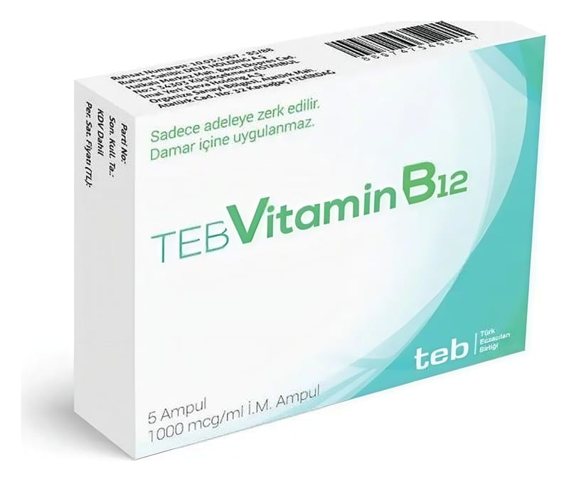

Teb Vitamin B12 1000 mcg/ml I.M Enjeksiyonluk Çözelti İçeren Ampul, 5 Adet

Ne için kullanılır
KT · Bölüm 1TEB VİTAMİN B
, 1 mL’lik renksiz ampuller içinde, kırmızı renkli, berrak çözeltidir.
Her 1 mL’lik ampul etkin madde olarak siyanokobalamin (B
vitamini) içerir. TEB VİTAMİN B
; • B
vitamininin emilimindeki yetersizlik sonucu ortaya çıkan kansızlık (pernisiyöz anemi) • B
vitamini eksikliğinden kaynaklanan eritrosit hacminin hemoglobin ağırlığına oranının artmasıyla oluşan kansızlık (hiperkrom makrositer anemi), • Şiddetli ve ani başlayan, şimşek çakar tarzda yüz ağrısı (trigeminus nevraljisi), • Sinir romatizması (siyatik), Bu ilacı kullanmaya başlamadan önce KULLANMA TALİMATINI dikkatlice okuyunuz, çünkü sizin için önemli bilgiler içermektedir. • Bu kullanma talimatını saklayınız. Daha sonra tekrar okumaya ihtiyaç duyabilirsiniz. • Eğer ilave sorularınız olursa, lütfen doktorunuza veya eczacınıza danışınız. • Bu ilaç kişisel olarak size reçete edilmiştir, başkalarına vermeyiniz. • Bu ilacın kullanımı sırasında doktora veya hastaneye gittiğinizde bu ilacı kullandığınızı doktorunuza söyleyiniz. • Bu talimatta yazılanlara aynen uyunuz. İlaç hakkında size önerilen dozun dışında yüksek veya düşük doz kullanmayınız.
Sayfa 2 / 7
• Zona, akut sinir iltihabı (nevrit), ve sinir ağrısı (nevralji) tedavisinde kullanılır.
Ayrıca idrarda B
vitamini miktarını ölçmede (Schilling testi) de teşhis amaçlı olarak kullanılır.